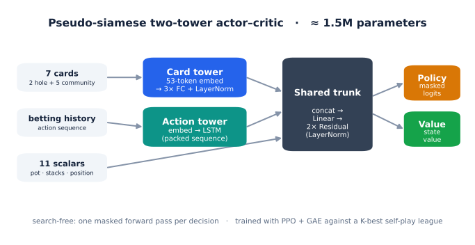
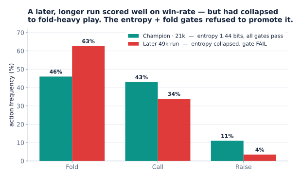
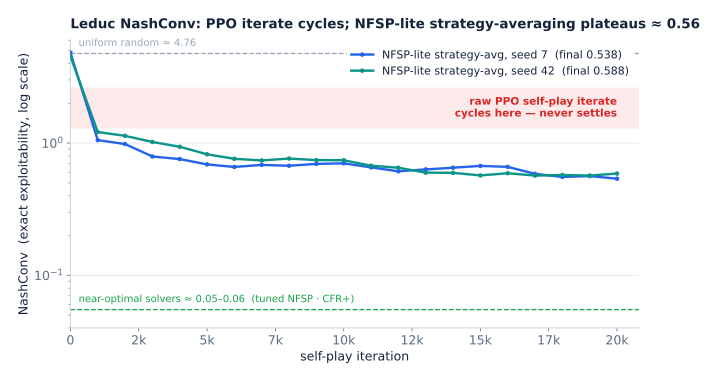
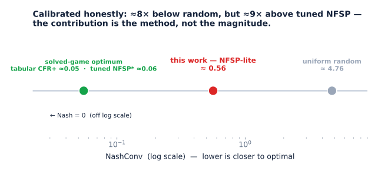
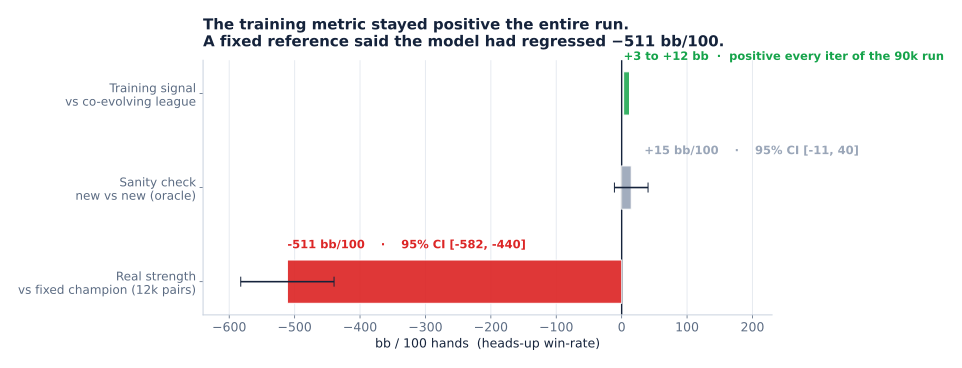
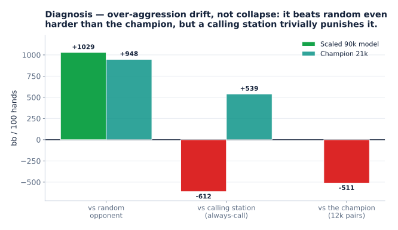

A from-scratch PyTorch reinforcement-learning agent for Heads-Up No-Limit Texas Hold’em (HUNL), inspired by AlphaHoldem (Zhao et al., AAAI 2022): a pseudo-siamese two-tower actor–critic (~1.5M parameters), trained with PPO + GAE against a K-best self-play league over OpenSpiel’s universal_poker, under discrete betting abstractions (FCPA, FCHPA). It runs on a single GPU.
The agent trains without much trouble. The substance here is the evaluation: metrics that resist gaming, a harness that caught regressions the training curves hid, and negative results reported plainly.
What it is not
- Not a reproduction. Input representation, loss, betting abstraction, and scale all differ from the paper (see Differences from the paper).
- Not a Slumbot-beater. Never measured against Slumbot; out of reach at solo scale.
- Not near-Nash. HUNL exploitability is intractable (~10¹⁶¹ information sets); no exploitability claim is made about the HUNL agent.
Architecture

A card tower (53-token embedding → 3-layer MLP over the 7 cards) and an LSTM action tower (over the betting history) fuse with 11 scalar features into a shared trunk (Linear → 2 residual blocks), which splits into policy and value heads. LayerNorm throughout — PPO’s small, correlated batches make BatchNorm statistics unreliable. Legal-action masking is applied post-forward, so it never has to live inside the trunk.
Evaluation

Win-rate against a single baseline is gameable: an over-folding policy can post a large margin while being strategically degenerate. So promotion is gated on behavior envelopes — fold frequency, aggression, policy entropy, and bet-size mix. A run graduates only if it stays inside all of them.
This caught a regression. A later 49k-step run scored well on win-rate but had collapsed to fold-heavy, low-entropy play (fold 63%, raise 4%, against the champion’s 46% / 11%). The entropy and fold gates flagged it and the harness refused to promote it. The training metric never noticed.
Two corrections made the numbers trustworthy: Student-t confidence intervals (the prior Normal intervals were ~40% too narrow; the champion’s headline half-width went from ±75 to ±106) and duplicate mirrored-seat hands (play both holdings of each deal under a shared RNG to cancel hole-card luck).
Champion: the Stage D FCHPA 21k checkpoint (interview_ready_1). It passes every gate and plays a balanced strategy — entropy 1.44 bits, fold 46% / call 43% / raise 11%.
One number retired. “+897 bb/100 vs MCCFR-ES” is not a strength result. OpenSpiel’s MCCFR average policy is uniform-random on unvisited information states, and HUNL has far too many for it to be otherwise. The harness’s zero-iteration (uniform) control scores higher (970 bb/100) than the 5k- and 10k-iteration “solver” tiers (898, 934) — adding solver iterations makes the opponent easier, not harder. The figure is a sanity check against a near-random control, not evidence of strength, and is never placed next to AlphaHoldem’s +11 mbb/h vs Slumbot.
Exact exploitability on Leduc
HUNL exploitability is intractable, so the learning dynamics are probed on Leduc poker (936 information states, exact NashConv) using the same PPO + self-play recipe. NashConv here is the sum of both players’ best-response gains (≈2× single-player exploitability). References: uniform random ≈ 4.76, tuned NFSP ≈ 0.06, tabular CFR+ ≈ 0.05, Nash 0.
The investigation (R1–R10)

Ten rounds, ~35 configurations:
- The raw PPO self-play iterate cycles. Best checkpoint 0.67; the current iterate diverges back to 1.3–2.6 (it spikes to 4.88 on the 500-iter baseline while its time-average holds near 2.0). This is best-response cycling — the iterate orbits the equilibrium rather than approaching it.
- Averaging the snapshot networks fails (0.84–1.28) — worse than the best single checkpoint, because the iterates make wide excursions and averaging their parameters yields a muddy mixture.
- NFSP-style strategy-averaging is the only non-divergent estimator. A supervised average-policy net trained on a reservoir of best-response actions plateaus at NashConv 0.538 and 0.588 across two seeds (mean 0.56). Broadly decreasing then flat; not monotone, not near-Nash.
- MMD / NashPG (R8–R10): PPO with a KL term toward a periodically-refreshed magnet damps the divergence (bounded ~1–2.5 vs plain PPO’s 4.88) but never pins the iterate low. Sampled GAE advantages are too noisy; clean R-NaD/NeuRD need all-actions counterfactual values (Deep-CFR scale, out of scope).
Calibration

0.56 is ≈8× below random but ≈9× above tuned NFSP. It is reported as methodology, not magnitude — the contribution is choosing an exact, opponent-independent metric and reporting the negatives (snapshot-network averaging rejected, Trinal-Clip bit-identical to vanilla at Leduc’s chip scale, MMD non-convergent), not the number itself. Leduc is a solved game where tabular CFR reaches ~0 in seconds; the 0.56 belongs to the Leduc probe and is never attached to the HUNL agent.
Reconciling with AlphaHoldem
AlphaHoldem reports convergence via training loss, Elo plateau in its self-play league, and win-rate (+111.6 mbb/h vs Slumbot). It never computes exploitability and concedes best-response is prohibitive on HUNL. Win-rate is not exploitability: Lisý & Bowling showed two bots tied head-to-head (within ~20 mbb/g) yet ~1300 mbb/g apart in measured exploitability. The Leduc study is the test HUNL cannot run — not a failed reproduction.
Scaled run, and the regression it caught

To push for a stronger head-to-head agent: a vectorized collector (B games stepped in lockstep with batched inference, ~30–100× throughput), a fixed inverted PFSP opponent-sampling bug, and a Trinal-Clip loss. Warm-started from the 21k champion and run 90,000 iterations on one GPU (~9×10⁷ hands, ~38 h).
Training reward against the co-evolving league stayed +3 to +12 bb the entire run. The fixed-reference ladder — 12k duplicate pairs against the champion — read −511 bb/100 (95% CI [−582, −440]). The new-vs-new oracle returned +14.6 [−11, +40], so the evaluation was sound. The scaled model lost to the checkpoint it started from.
Diagnosis

Over-aggression drift, not collapse. Against a random opponent it scored +1029 bb/100 (champion +948); against an always-call station it lost −612 (champion +539). The training mix had no calling opponents, and the co-evolving league learned to fold to aggression — a feedback loop rewarding ever-more-aggressive play until it met something that would not fold.
Limitations
Strong-but-exploitable, measured carefully — not near-Nash, not a record win-rate. The throughput gap against AlphaHoldem (~2.7B hands, 8 GPUs, 3 days) is not closeable solo. The champion remains the strongest model; the scaled run was a negative result.
Differences from the paper
| Axis | AlphaHoldem | This repo |
|---|---|---|
| Card / action input | multi-channel tensors → ConvNets | 53-token embedding → MLP / LSTM |
| Loss | Trinal-Clip PPO | clipped PPO + Huber value |
| Self-play | top-K by Elo | top-K rolling + rating-temperature sampling |
| Game scope | abstraction-free full game | FCPA (4) / FCHPA (5) |
| Inference | search-free, single forward pass | search-free, single forward pass |
| Parameters | ~8.6M | ~1.5M |
Code and artifacts
Every quantitative claim is backed by a committed config, script, or run log:
- Leduc investigation (R1–R10):
docs/leduc_sweep_log.md; harnessespoker_rl_agent/scripts/validate_leduc_exploitability.py(PPO self-play, MMD/NashPG) andvalidate_leduc_nfsp.py(strategy-averaging); tabular anchorleduc_cfr_anchor.py. - Scaled run + regression:
docs/strong_fchpa_run_state.md; collectorpoker_rl_agent/algorithms/vectorized_self_play.py; PFSP fixpoker_rl_agent/training/league_manager.py; ladderpoker_rl_agent/scripts/evaluate_own_ladder.py. - Evaluation harness: behavior gates and duplicate-hand evaluation in
poker_rl_agent/evaluation/evaluator.py; Student-t intervals inpoker_rl_agent/evaluation/stats.py.
Head-to-head figures are reported with sample size and 95% CI; the behavior-probe point estimates (vs random / always-call) are diagnostic, with intervals in docs/strong_fchpa_ladder/behavior_probe.json.